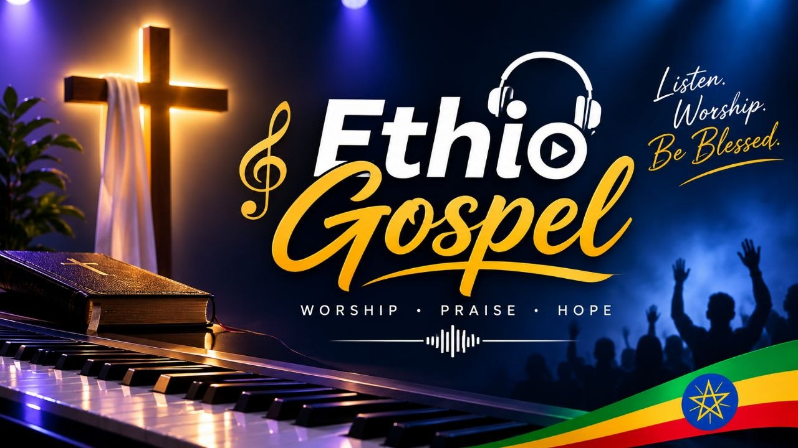

Welcome to Ethio Gospel
Ethio Gospel is an online music player dedicated to Ethiopian gospel music. The website features talented gospel singers including Bereket Tesfaye, Dawit Getachew, Mesfine Mamo, Illash Fikadu, Aster Abebe, Pastor Tesfaye Gabiso, Tesfaye Chala, and Kingdom Worship Ministry Users can explore artists, discover gospel songs, and enjoy music that inspires faith, hope, and worship. The website aims to provide a simple, modern, and enjoyable platform for Ethiopian gospel music lovers.
Discover the best Ethiopian gospel music and artists.

Featured Music
popular artists
- Bereket Tesfaye
- Dawit Getachew
- Mesfine Mamo
- Illash Fikadu
- Aster Abebe
- Pastor Tesfaye Gabiso
- Tesfaye Chala
- Kingdom Worship Ministry